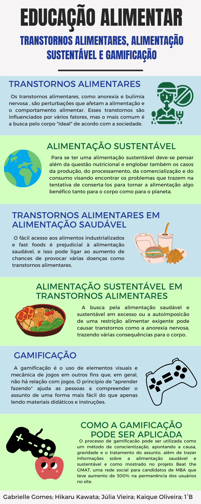

Nossos Projetos
Decidimos fazer um jogo de tabuleiro com 3 temas, todos eles dentro do assunto de Educação Alimentar, são eles: alimentação saudável, segurança alimentar e transtornos alimentares. Optamos fazer um jogo de tabuleiro por ser algo mais divertido e interativo, com objetivo de conscientizar, e trazer informações sobre esse tema.
A nossa equipe optou desenvolver um jogo por causa de um estudo realizado por Bianca Vargas no seu artigo "A Gamificação como Estratégia de Engajamento e Motivação na Educação". Basicamente ela aborda como o processo de gamificação, que é a utilização de jogos como forma de aprendizado, pode ajudar na educação e na conscientização de temas importantes.
Leia mais em: A Gamificação como Estratégia de Engajamento e Motivação na Educação
Ao longo do nosso projeto, desenvolvemos diversos trabalhos além do jogo de tabuleiro. Um deles é o Artigo Científico, com o tema focado em transtornos alimentares, além de padlets sobre a substância sacarose, mais comumente conhecido como açúcar. Também foi feito uma entrevista com uma nutricionista, para que nossos dados obtenham maior confiança a partir de falas de nutricionistas. Um infográfico sobre os nossos projetos pode servir para que nossas informações tenham maior firmeza, baseados em artigos científicos.
A utilização de VLibras dentro do nosso site permite a maior acessibilidade de pessoas com deficiências auditivas.
Leia mais sobre a acessibilidade e inclusão em sites em: ACESSIBILIDADE EM SITESE PORTAIS ELETRÔNICOS: SOFTWARESE APLICATIVOS DE TRADUÇÃO DA LÍNGUA BRASILEIRA DE SINAIS(LIBRAS).
Jogo de tabuleiro
O jogo elaborado se chama "Questionário Saudável", onde os participantes vão ter que responder perguntas relacionadas com os temas para conseguir vencer a partida.
Elementos do jogo

Como jogar:
As casas são dividas em três cores: azul, vermelho e verde. Sendo azul o tema de Segurança Alimentar, vermelho o tema de Transtornos Alimentares e verde o tema de Alimentação Saudável.
Para saber mais sobre as regras do jogo, clique aqui para baixar o arquivo do manual em pdf.
Artigo Científico
A nossa equipe também desenvolveu um artigo científico sobre o tema Transtornos Alimentares. Foi feito uma revisão bibliográfica para identificarmos as causas e sintomas dos transtornos bulimia e anorexia nervosa, e encontra um meio de conscientização alternativo.
Para ler o nosso artigo, clique aqui para baixar o arquivo em pdf.
Ciências da Natureza
Também foi feito um padlet abordando os alguns tópicos de biologia e química sobre a substância sacarose (açúcar). Saiba mais sobre a sacarose em:
Entrevista
Foi realizado uma entrevista com a nutricionista Marinalva Rosa. A entrevista tem o objetivo de conseguir pertinêntes em relação aos temas que propusemos em nosso projeto:
Infográfico
Veja também um infográfico criado pela nossa equipe acerca dos temas relacionados ao projeto:
